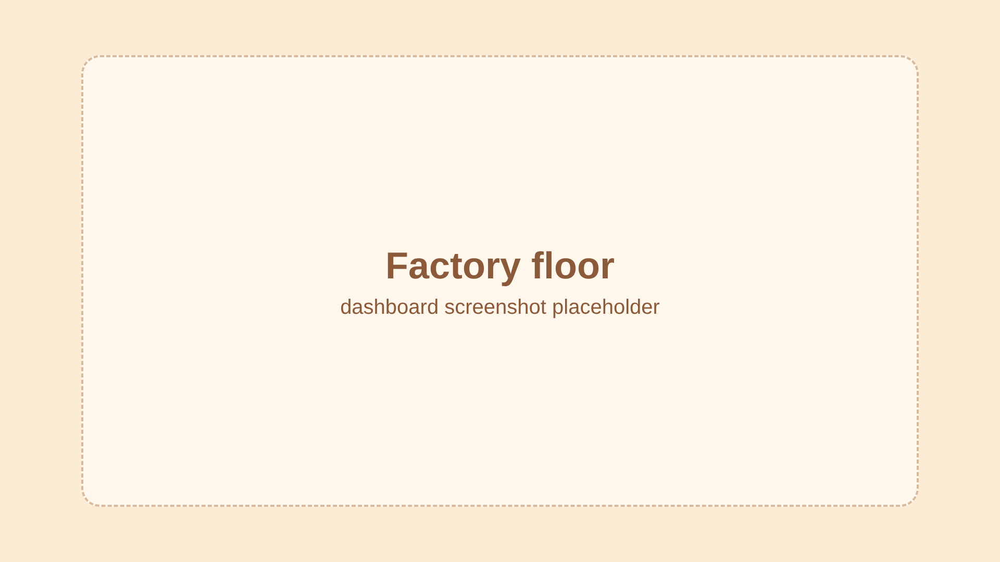
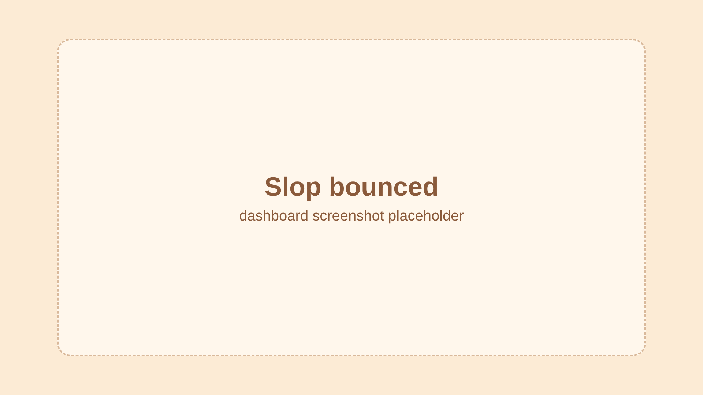
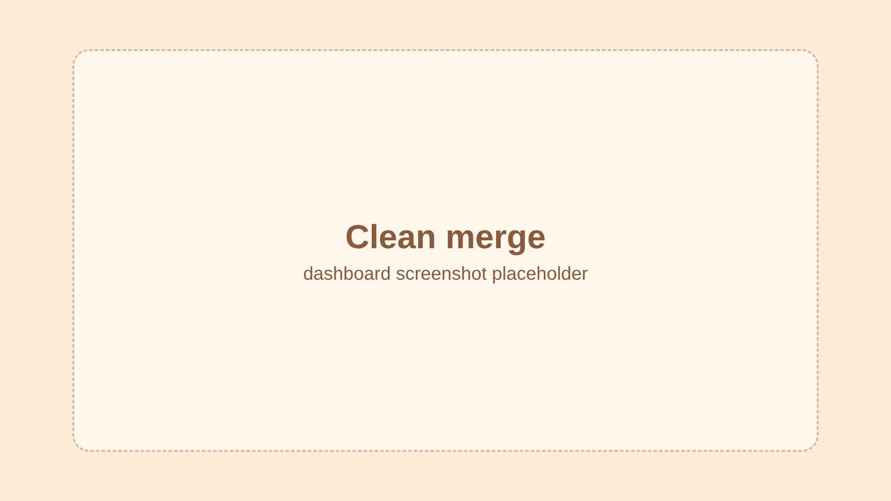

the chillest software factory
// TODO: handle errors laterfunction legacyTimer() {} // unusedexpect(true).toBe(true);M billing.ts M .eslintrcAn LLM coding agent writes the change
Capy makes every judgment call


